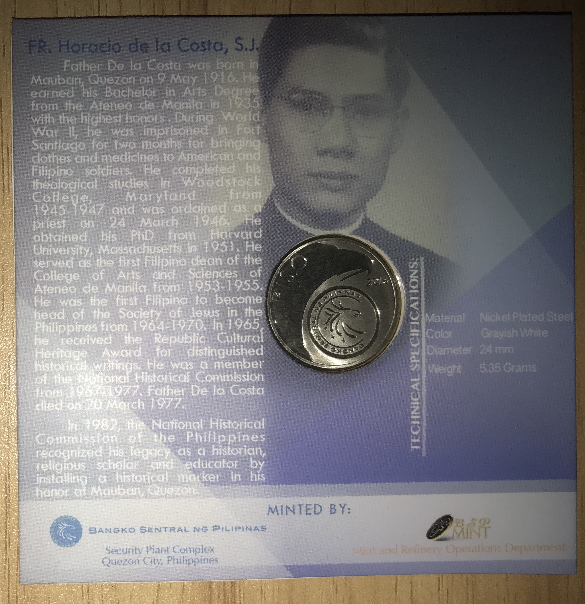

A Coin of a Historian
Released by the Banko Sentral ng Pilipinas on 2016 is a coin commemorating Fr. Horacio de la Costa. It celebrates the 100th birthday of the Historian and Jesuit. The obverse can be seen above. Interestingly, even from this view, the edge can be easily seen. It is reeded.
Like the others, the relief is frosted, with the field possessing a mirror finish. At the center is a relief of the man, in his signature glasses, religious garb and a suit coat. To his right, his age “100 Years” is marked, while at the bottom is his name. To his left is the legend “Republika ng Pilipinas”, surrounded by a wall of numbers showing 100 on repeat.

Here is the reverse of the coin, better known as the tail. The relief is frosted, while the field has a mirror finish. At the legend is the denomination “1 Piso”. Surrounding it is a field in the shape of an eagle, likely the Philippine Eagle.
Below said eagle is a relief of the logo of the BSP. Likewise, it is an eagle, with three stars at the bottom. They represent the three major island: Luzon, Visayas, and Mindanao. Surrounding them in an arc is “Banko Sentral ng Pilipinas. Below the tip of the eagle relief is the year 2016.
It is a simple design, a precursor of the circulation coins released today. Such simplicity may represent the humility of the figure. Being that the denomination is like that of our national hero, it is a fitting commemoration of the historian, religious scholar , and educator. A man who aided the troops at risk of his life in the Second World War and educated the youth post-war. That is all.